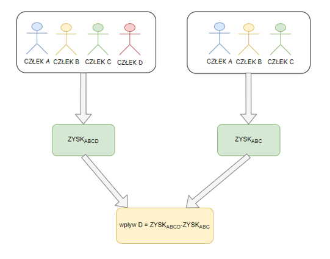
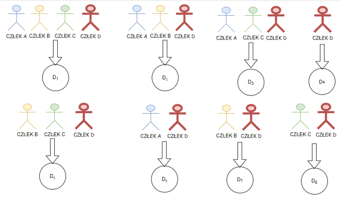

Wyjaśnialność modeli - definicje¶
Partial dependence function¶
Wprowadźmy sobie funkcję cząstkowej zależności (ang. partial dependence function) f_{S}.
Funkcja cząstkowej zależności wyraża się wzorem
gdzie \(x_{S}\) to wartość cech dla których chcemy stworzyc wykres zalezności cząstkowej, natomiast zmienna losowa \(X_{C}\), to inne cechy użyte w modelu. Przez f oznaczamy funkcje modelu uczenia maszynowego, natomiast \(\rho\) to miara rozkładu prawdopodobieństwa dla \(X_{C}\) W ten sposób otrzymujemy zależnośc tylko między interesujacymi nas wartościami cech S, a wartościa predykcji modelu. Estymujemy funkcję \(f_{S}\) metodą Monte Carlo. Wzór na tą estymację \(\hat{f}_{S}\), to:
gdzie n to ilość obserwacji w naszym zbiorze treningowym, naotmiast \(x_{C}^{i}\), to rzeczywiste wartości zmiennych objaśniających \(x_{S}\) w zbiorze treningowym
Lokalna wierność¶
Wzór na lokalną wierność (ang. local fidelity). Matematycznie wzór na takie wyjaśnienie \(\xi\) w punkcie x wyraża się wzorem:
gdzie \(\xi\) to funkcja z rodziny funkcji G (np. wielomiany co najwyżej drugiego stopnia), L to funkcja wierności odwzorowania, na przykład możemy tu użyć błędu średniokwadratowego, natomiast \(\Omega\) jest miarą złożoności funkcji - np może to być stopień wielomianu funkcji pomocniczej, \(\pi_{x}\) zaś jesto otoczeniem punktu \(x\) dla którego chcemy uzyskac objaśnienie
Shap¶
Wartośc Shapleya wywodzi się z teorii gier kooperacyjnych. Swoja nazwe zawdzięcza amerykańskiemu matematykowi Lloydowi Shapleyowi, który utrzymał za nią Nagrodę Nobla. Najpierw przyjrzyjmy sie definicji gier kooperacyjnych.
Definicja
Grą koalicyjną deifniujemy jako zawierającą nastepujące elementy. Zbiór \(N\) oraz funkcję \(v\) mamupjąca podzbiory graczy na liczby rzeczywiste \(v:2^{n} \rightarrow \mathbb{R}\), gdzie \(v(\varnothing) = 0\). Funkcję \(v\) nazywamy funkcją charakterystyczną.
Funkcję v możemy rozumieć w następujący sposób. Jeżel \(S\) jest koalicją graczy, wtedy \(v(S)\) stawoi oczekiwaną wartość zysku jaki człokowie \(S\) moga uzyskać przez kooperację. Wprowadźmy wzór na wartość shap.
Jak możemy to rozumieć? Otóż wartość Shapley dla gracza i to suma róznic między wartościami funkcji charakterystycznej dla takich samych koalicji z dodatkowo zawartym graczem i lub nie. Wartość ta jest skalowana przez ilość graczy oraz ilość koalicji takiego samego rozmiaru (dla każdego elementu sumy, bez uwzględniania gracza i). Zobaczmy na ilustracjach podstawową intuicję kryjącą się za wartościami shap

Na pierwszej ilustracji widzimy na czym polega porównanie udziału danego gracza w koalicji. Dla jeden z koalicji wyliczamy zysk z obecnym graczem oraz bez niego. Następnie liczymy w ten sposób zyski dla wszystkich mozliwych koalicji z graczem lub bez niego.

Tak jak widzimy na kolejnej ilustracji, dla wszystkich mozliwych koalicji liczymy zyski (wartości funkcji charakterystyczej z oraz bez badanego gracza). Te wartości posłuża nam do wyliczenia wartości Shapley według wzoru